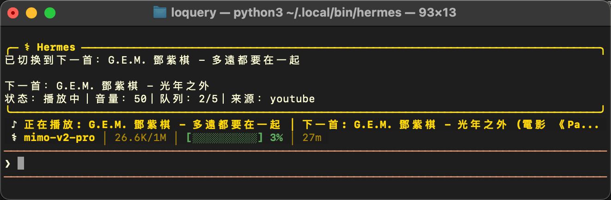

Terminal-native Music Agent
让 Hermes 与 OpenClaw 拥有一个真正能播放音乐的本地 Agent
`music-agent` 把 slash command、后台播放、热门榜单、音源切换和状态栏展示串成一条完整链路。 你只需要输入 `/music ...`，剩下的搜索、解析、播放、切歌和终端反馈都在本地完成。
Hermes Ready
OpenClaw Ready
mpv Powered
YouTube Music / Bilibili / SoundCloud
$ /music state hermes
Hermes 状态栏音乐补丁已更新
$ /music source y
当前音源偏好：YouTube Music
$ /music keyword 邓紫棋
已开始播放相关队列，共 20 首
♪ 正在播放：唯一 - G.E.M. 邓紫棋
下一首：多远都要在一起
Why This Project
不是播放器壳子，而是适合终端工作流的音乐代理
这个项目的重点不是做一个花哨播放器，而是把“终端里想听歌”这件事打磨成一个自然动作。 你可以在写代码、跑 CLI、用 agent 的同时，让音乐播放保持轻量、安静、可控。
关键词队列
支持按关键词生成最多 20 首播放队列，适合听单曲、歌手名或主题词。
KKBOX 热榜
基于 KKBOX 风云榜日榜取热歌，再去指定音源里拿可播放版本。
语种与音源切换
支持 `华语 / 英语 / 日语 / 韩语 / 粤语`，也支持 `y / b / s` 快速切换单一音源。
状态栏补丁
一条命令即可给 Hermes 打补丁，把当前播放与下一首直接塞进状态区域。
Architecture
从 slash command 到声音输出，链路清晰可控
/music ...
musicctl
musicd
source adapters
mpv
musicctl
CLI 入口。负责命令解析、状态输出、安装辅助和与守护进程的交互。
musicd
后台守护进程。负责队列、切歌、播放状态、音量与控制消息分发。
Source Adapters
支持 YouTube Music、Bilibili、SoundCloud，不同命令可以按你的偏好切换。
mpv
真正负责本地音频输出，并附带 now playing 标题与封面元数据。
CLI Experience
围绕真实使用场景设计的命令面
Quick Start
git clone git@github.com:LK-520/music-agent.git
cd music-agent
./scripts/install_hermes_skill.sh
musicctl --text state hermes
musicctl --text source y
musicctl --text play "后会无期"播放
`/music keyword 周杰伦`
`/music hot english`
控制
`/music pause`
`/music next`
`/music stop`
状态
`/music status`
`/music source b`
`/music lang 粤语`
Hermes State Bar
`state` 指令把“当前播放 + 下一首”直接放进 CLI 里
`musicctl --text state hermes` 会自动查找本机 Hermes 安装位置并打补丁。 打完补丁后，Hermes 状态栏上方会多出一条音乐状态栏，适合边工作边听歌。
